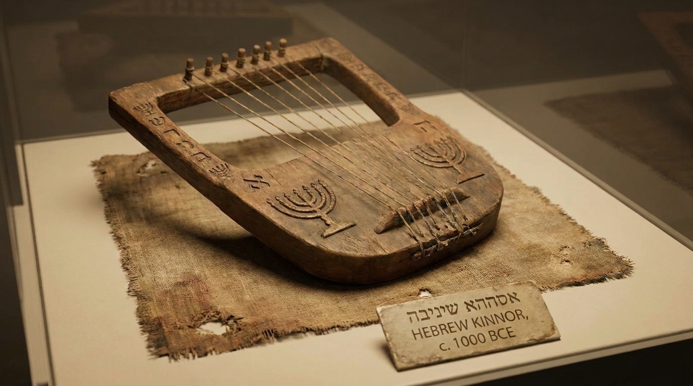

O Coração da Adoração e da Oração
O livro de Salmos é o grande hinário e manual de orações do povo de Deus. É uma coleção poética de 150 cânticos que expressam a totalidade da experiência humana. Diferente de grande parte da Bíblia, que narra Deus falando com os homens, os Salmos registram homens falando com Deus, mostrando-nos como adorar, lamentar, confessar pecados e confiar no Senhor em cada circunstância da vida.
Ficha Técnica
- Autores: Vários (Davi escreveu pelo menos 73, além de Asafe, os filhos de Corá, Salomão, Moisés e autores anônimos).
- Tema Principal: Louvor, adoração, oração, lamento, a fidelidade de Deus e profecias sobre o Messias.
- Versículo-Chave: "Tudo o que tem vida louve o Senhor! Aleluia!" (Salmos 150:6)
Estrutura
Historicamente, o livro é dividido em 5 partes (imitando os 5 livros da Lei de Moisés):
- Livro I (Salmos 1–41) - Foco em Davi, conflitos e confiança.
- Livro II (Salmos 42–72) - Sofrimento, libertação e esperança messiânica.
- Livro III (Salmos 73–89) - Foco congregacional e santuário.
- Livro IV (Salmos 90–106) - Deus como nosso refúgio e Rei eterno.
- Livro V (Salmos 107–150) - Celebração, a Palavra de Deus e o grande louvor final (Aleluia).